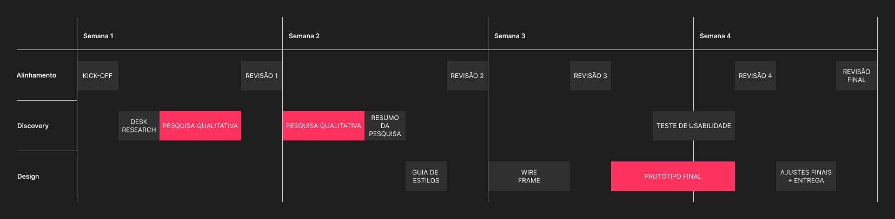
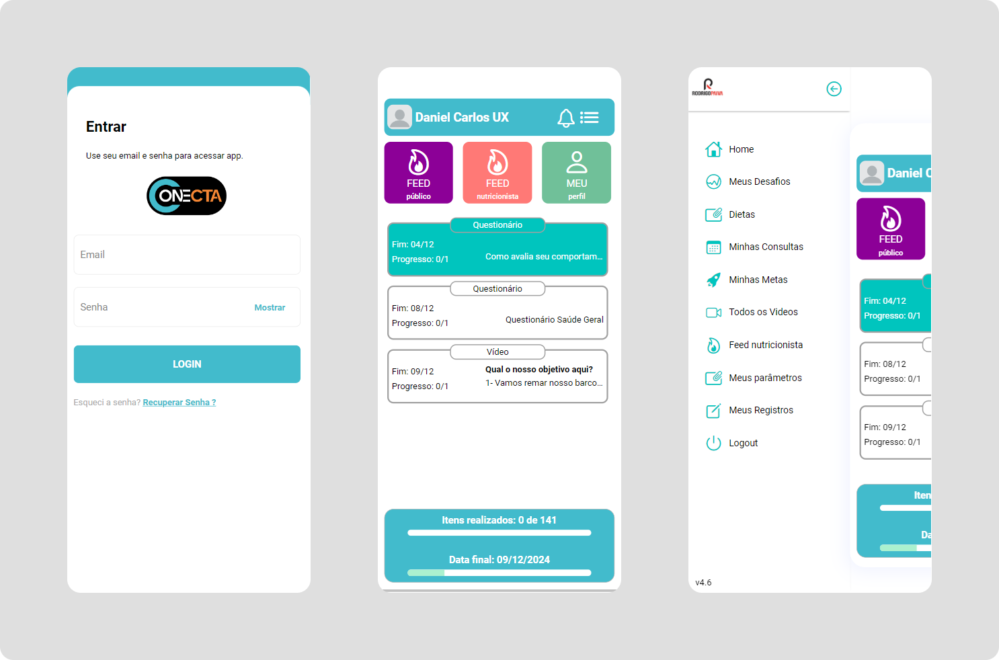

Transformando a Experiência Nutricional: Redesign do app Conecta Transforming the Nutritional Experience: Conecta App Redesign
Redesenhando a jornada do paciente: da confusão no primeiro acesso a um acompanhamento nutricional intuitivo Redesigning the patient journey: from confusion at first access to intuitive nutritional tracking
📈 O cenário atual
📈 The current scenario
O mercado de nutrição tem passado por uma transformação, com a crescente demanda por acompanhamentos mais próximos e personalizados. Nutricionistas buscam ferramentas que vão além das consultas presenciais, permitindo um monitoramento contínuo e individualizado dos pacientes. No entanto, muitos profissionais ainda encontram dificuldades em oferecer esse nível de atenção, seja pela falta de tempo ou de recursos adequados. Essa lacuna entre a necessidade de personalização e as ferramentas disponíveis cria um cenário desafiador, mas também uma grande oportunidade para soluções inovadoras.
The nutrition market has been going through a transformation, with an increasing demand for closer and more personalized monitoring. Nutritionists are looking for tools that go beyond face-to-face consultations, allowing for continuous and individualized patient tracking. However, many professionals still find it difficult to offer this level of attention, whether due to lack of time or adequate resources. This gap between the need for personalization and the available tools creates a challenging scenario, but also a great opportunity for innovative solutions.
🤔 O problema
🤔 The problem
Para iniciar o projeto de redesign, utilizei a Desk Research e percebi que existia uma falha de comunicação dentro do aplicativo. O usuário não era instruído da forma correta ao entrar pela primeira vez no app, o que ocasionava na falta de uso de diversas tarefas que o nutricionista propunha ao paciente na sua jornada de dieta, resultando em um desanimo e futuramente na desistência de usar o app.
To start the redesign project, I used Desk Research and realized there was a communication gap within the application. The user was not properly instructed when entering the app for the first time, which caused a lack of engagement with the various tasks the nutritionist proposed to the patient in their diet journey, resulting in discouragement and ultimately the abandonment of the app.

✏️ UI Design e Prototipação
✏️ UI Design and Prototyping
A solução proposta foi melhorar a arquitetura de informação e a interface do app, para que o usuário tivesse uma experiência mais intuitiva e agradável, e que o nutricionista conseguisse acompanhar o progresso do paciente de forma mais eficiente.
The proposed solution was to improve the app's information architecture and interface so that the user would have a more intuitive and pleasant experience, and the nutritionist could track the patient's progress more efficiently.

Para criar um novo fluxo, comecei pesquisando outras plataformas de nutrição e saúde para entender como elas funcionavam e quais eram os pontos fortes e fracos de cada uma. Com essas informações, criei um wireframe de baixa fidelidade para testar a nova arquitetura de informação e o fluxo de navegação.
To create a new flow, I started by researching other nutrition and health platforms to understand how they worked and what their strengths and weaknesses were. With this information, I created a low-fidelity wireframe to test the new information architecture and navigation flow.
Com o wireframe aprovado, passei para a criação do design de alta fidelidade. Para isso, utilizei o Figma e criei uma paleta de cores mais suave e amigável, com tons de verde e azul para transmitir saúde e bem-estar. Além disso, criei um Design System para padronizar os elementos visuais e facilitar a criação de novas telas no futuro.
With the wireframe approved, I moved on to creating the high-fidelity design. For this, I used Figma and created a softer and friendlier color palette, with shades of green and blue to convey health and well-being. In addition, I created a Design System to standardize the visual elements and facilitate the creation of new screens in the future.

🎉 O resultado
🎉 The result
O redesign do app Conecta foi um sucesso. Os usuários relataram que o app ficou mais fácil de usar e que a nova interface era muito mais agradável. Além disso, os nutricionistas conseguiram acompanhar o progresso dos pacientes de forma mais eficiente, o que resultou em uma maior adesão ao tratamento e melhores resultados para os pacientes.
The Conecta app redesign was a success. Users reported that the app became easier to use and that the new interface was much more pleasant. Furthermore, nutritionists were able to track their patients' progress more efficiently, which resulted in greater treatment adherence and better outcomes for the patients.